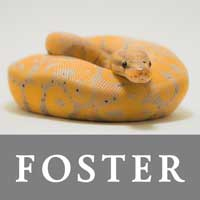
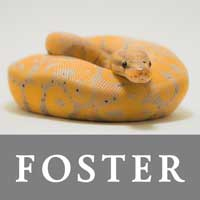

Donate Now to Help
 


We ARR
A non-profit organization dedicated to the rescue of amphibians and reptiles
in Utah. Our mission is to better the quality of life for abandoned and injured
herpetiles by transporting them safely, finding them temporary homes
within our foster network, making sure they are perfectly healthy and adjusted,
and ultimately placing them in their perfect forever home.
Recent Posts
- Common Reptile Care Mistakes
- Common Pet Reptile Illnesses
- Should I feed my Snake Rat...
- SEE MORE
Upcoming Events
- July 19: Reptile Week
- August 3: What are Amphibians?
-
August 20: Over the Lither and
Through the Woods - SEE MORE
Help Us Save Herpetiles
-
Medicine for One -

Food for Five -

Vet Visit -

Lifesaving Surgery